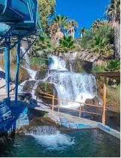

Los Filtros Están en Perlas del Conchos. Son cerca de 20 balnearios juntos con agua de manantial cristalina, sin cloro, que corre todo el dÃa.
Cada balneario tiene albercas naturales, toboganes, palapas con asador, Áreas verdes y cabañas. Es ideal para ir a hacer carnita asada y acampar en familia.